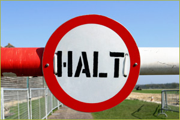
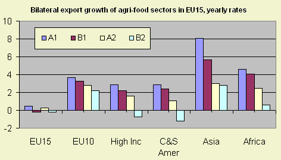
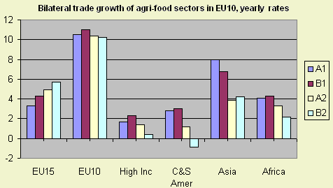

EU-enlargement and trade arrangements (WTO)
The international relationships between countries and their position within trade blocks influence world trade through subsidies and trade barriers. The lengthy and difficult negotiations especially about agriculture and food products in the WTO show the national interests that are involved. In Eururalis assumptions are made about the further expansion of the EU and about global trade. In the Global Economy and Global Cooperation scenario an open world is assumed with few to no trade barriers where trade with non EU countries is promoted. |
 |
Impact on trade
The highest growth in trade, especially with Asia and Africa, occurs in the
two global scenarios (Global Economy and Global Cooperation).
Nevertheless also in the regional scenarios (Regional Communities and
Continental Market) international trade figures increase.

Figure 1 - trade growth in agri-food sectors of EU15

Figure 2 - trade growth in agri-food sectors of EU10
Assumptions per scenario
The Global Economy scenario assumes that the WTO negotiations are successful,
global trade will be fully liberalized and a further Eastwards EU enlargement
(including Turkey) will take place. Technological change is high. Poor countries
will catch up and experience high economic growth. This scenario shows the highest
income growth for almost all regions.
The Global Cooperation scenario assumes that international cooperation
will be successful and that trade will be liberalized, but with limitations
under certain conditions for people and planet (e.g. climate change). This process
will result in lower growth in economic terms and a lower economic development
than in Global Economy, especially for the EU where these concerns are important.
There will be a high growth rate in the EU accession countries (EU10+2).
In the Continental Market scenario the focus is on markets, though national
or continental interests prevails. The USA, Canada and the EU create a Trans-Atlantic
internal market. Such a unity will yield welfare gains in these regions, in
contrast with poverty in developing countries.
In the Regional Communities scenario both economic and non-economic values
will be important whilst regional or national interests prevail. Trade and agricultural
policies will remain almost unchanged, except for export subsidies. EU integration
will only be partial and technological change will be limited. The resulting
economic growth is lower than in other scenarios. Social values will lead to
catching up of developing countries because they can adopt existing technologies
from developed countries.